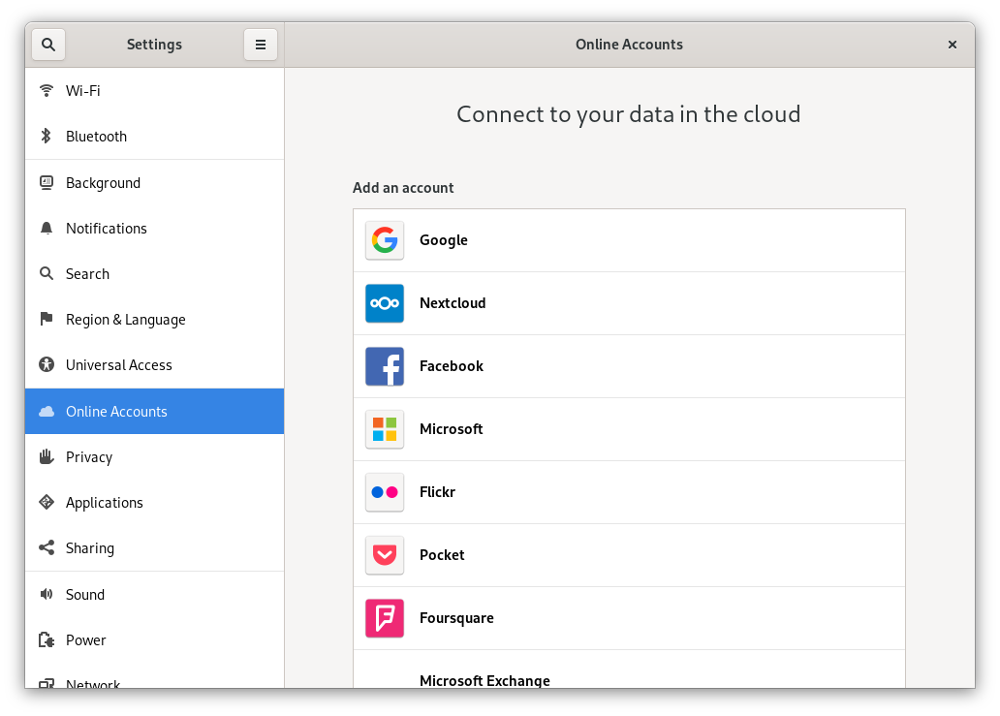

Sincronización co escritorio de GNOME
O escritorio de GNOME ten integrada a compatibilidade para o calendario, os contactos e as tarefas de Nextcloud que serán amosados polo Xestor de información persoal (PIM) de Evolution ou as aplicacións de Calendario, Tarefas e Contactos Do mesmo xeito, Ficheiros integrase no xestor de ficheiros Nautilus a través de WebDAV. Este último só funciona mentres a computadora está conectada.
Pódese facer seguindo estes pasos:
Nos axustes de GNOME, abra Contas en liña.
En «Engadir unha conta» escolla
Nextcloud:Introduza o URL do seu servidor, o nome de usuario e o contrasinal. Se activou a autenticación de dous factores (A2F), ten que xerar un contrasinal ou un testemuño de aplicación xa que as contas en liña do GNOME aínda non admiten o acceso co fluxo web de Nextcloud. (Obter máis información):

Na seguinte xanela, seleccione a que recursos debería acceder GNOME e prema na cruz na parte superior dereita para pechar:

As tarefas, calendarios e contactos de Nextcloud deberían estar agora visíbeis no Evolution PIM, así como nas aplicacións Tarefas, Contactos e Calendarios.
Os ficheiros amósanse coma un recurso WebDAV no xestor de ficheiros Nautilus e tamén estarán dispoñíbeis nos diálogos abrir/gardar ficheiros do GNOME. Os documentos deberían estar integrados na aplicación Documentos do GNOME.
Tamén debería poder buscar todos os recursos dende calquera lugar premendo a tecla Windows e introducindo un termo de busca.